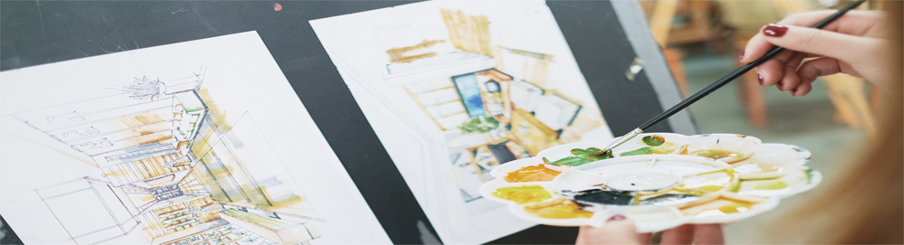

您的位置：首页 - 天目山简介

PHOEDE SHEARERI COMMUNITY PROFILE
天 / 目 / 山 / 简 / 介

GLORY AND DREAME

杭州园有桃文化艺术有限公司旗下天目山画室多年来，一步一个脚印，一年一点积累，国风管理，塌实教学，诚信办学。天目山画室由中国美术学院教师以及研究生和优秀本科毕业生执教，多年办学已形成一套易学应试的教学系统。天目山是一处以中国美院、中央美院、清华美院等重点院校为主要培养方向的专业考前培训基地. 天目山实行全日制全封式管理，小班精英制教学（20人—25人/班），专业教师全天陪护式跟踪教学，一对一精心辅导。我们开设文化课程，有6间文化课教室，杭州重高教师把关高考文化课，做到两手硬。天目山有自己的定位理念：教育要因材施教，不能和工厂流水线一样大批量生产，坚持把美术班做精做美做强，不抛弃不放弃任何一个学员。5年来天目山专注于教学与管理，做“专业型、精英型、国风型”为办学特色的一流美术培训精品学校。
Hangzhou has a peach garden culture and arts co., LTD., b's studio for many years, one step at a time, a year a little accumulation, special management, integrate teaching and sincerity of running a school. Phoebe sheareri community studio by China academy of fine arts teachers and graduate students and outstanding graduate teaching, for many years the school has formed a set of yi-ology exam-oriented teaching system. Phoebe sheareri community is a punishable by academy of China, the central beautiful courtyard, tsinghua university academy of key colleges and universities as the main development direction of the professional exam training base. Phoebe sheareri community full-time whole sealing type management, system of a small elite teaching (20-25 / class).
杭州园有桃文化艺术有限公司旗下天目山画室多年来，一步一个脚印，一年一点积累，国风管理，塌实教学，诚信办学。天目山画室由中国美术学院教师以及研究生和优秀本科毕业生执教，多年办学已形成一套易学应试的教学系统。天目山是一处以中国美院、中央美院、清华美院等重点院校为主要培养方向的专业考前培训基地. 天目山实行全日制全封式管理，小班精英制教学（20人—25人/班），专业教师全天陪护式跟踪教学，一对一精心辅导。我们开设文化课程，有6间文化课教室，杭州重高教师把关高考文化课，做到两手硬。天目山有自己的定位理念：教育要因材施教，不能和工厂流水线一样大批量生产，坚持把美术班做精做美做强，不抛弃不放弃任何一个学员。5年来天目山专注于教学与管理，做“专业型、精英型、国风型”为办学特色的一流美术培训精品学校。
Hangzhou has a peach garden culture and arts co., LTD., b's studio for many years, one step at a time, a year a little accumulation, special management, integrate teaching and sincerity of running a school. Phoebe sheareri community studio by China academy of fine arts teachers and graduate students and outstanding graduate teaching, for many years the school has formed a set of yi-ology exam-oriented teaching system. Phoebe sheareri community is a punishable by academy of China, the central beautiful courtyard, tsinghua university academy of key colleges and universities as the main development direction of the professional exam training base. Phoebe sheareri community full-time whole sealing type management, system of a small elite teaching (20-25 / class).
2016-2018 http://www.hztmsart.com All Right Reserved.技术支持:ICON